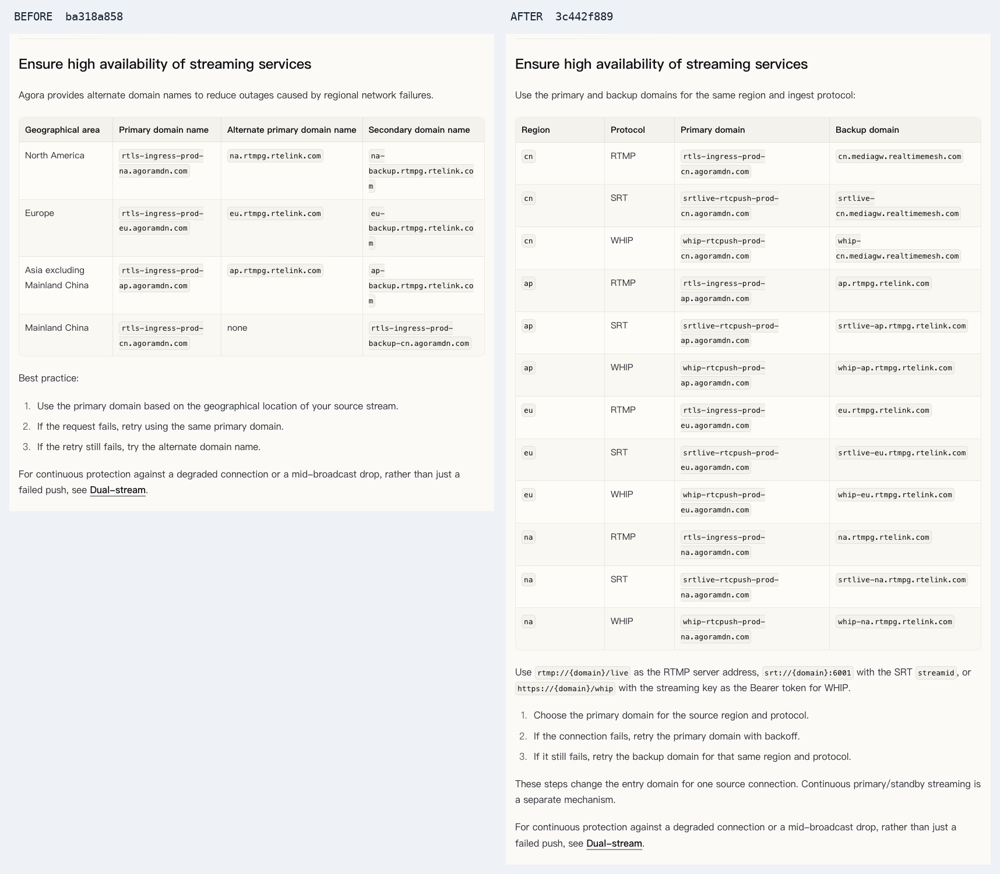
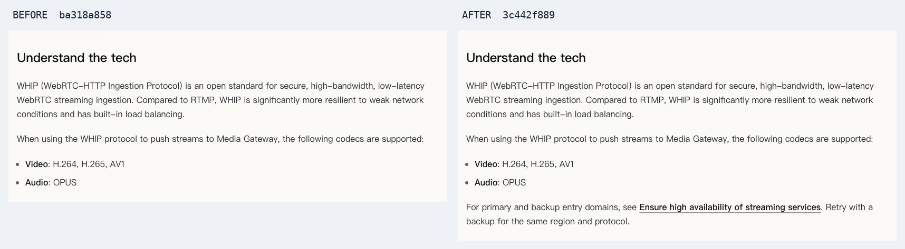

截图来自两个独立的源码版本，使用相同依赖及 1440 × 1050 的浏览器视口，均为英文页面的真实渲染。图片仅裁切到相关区域并加上前后版本标签；页面正文未改造。左侧为修改前，右侧为修改后。点击图片可打开原尺寸；下方可分别打开两张截图。此处展示的是 PR 改动，不代表已上线。
02 · 集成指南：主备域名及重试流程
修改前：按地区列出 RTMP 域名，使用 alternate primary / secondary 分类。
修改后：按四个地区、RTMP / SRT / WHIP 三个协议列出 12 组主备域名，补充地址格式和同地区同协议重试顺序。

单独打开修改前 · 单独打开修改后 · 返回清单
10 · WHIP 指南：增加域名参考入口
修改前：编码支持列表之后直接进入 OBS 配置。
修改后：增加主备域名表链接，并提醒使用同地区、同协议的备用入口。

单独打开修改前 · 单独打开修改后 · 返回清单